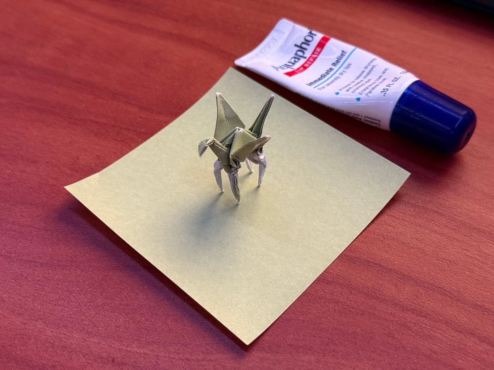

JAPANESE LANGUAGE PORTFOLIO / 2026
ようこそ、
器用な世界へ。
手でうまくなりましょう！
私はザイヤ・イクバルです。
これは、私の日本語学習と好きなことを集めた場所です。

一枚の紙で折った足のあるツル
目次 / TABLE OF CONTENTS
JAPANESE LANGUAGE PORTFOLIO / 2026
ようこそ、
手でうまくなりましょう！
私はザイヤ・イクバルです。
これは、私の日本語学習と好きなことを集めた場所です。

目次 / TABLE OF CONTENTS